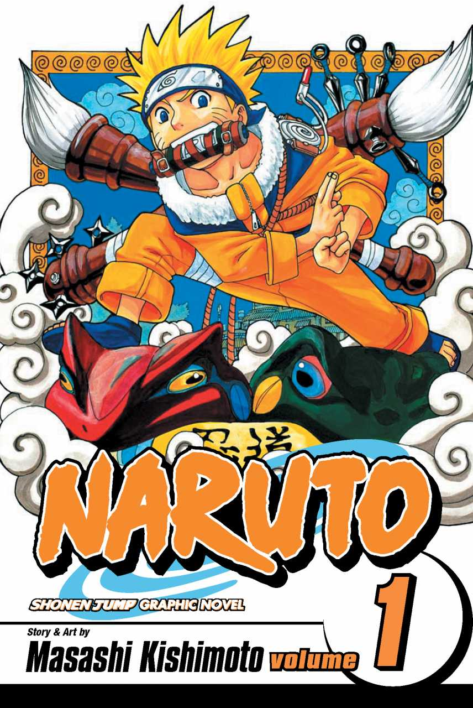
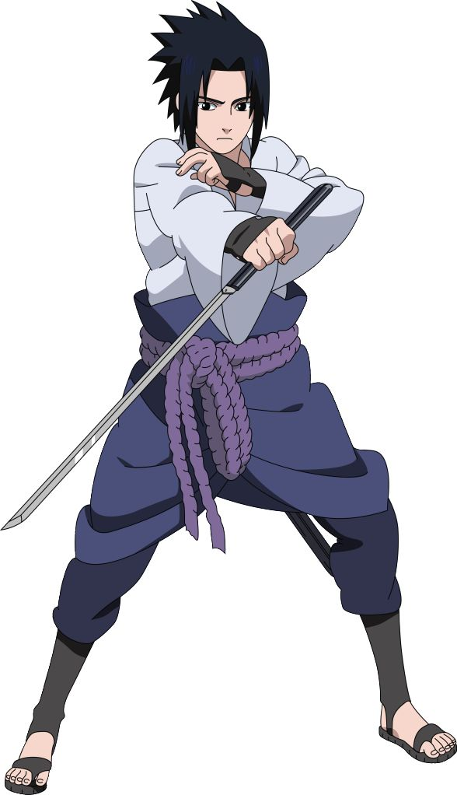
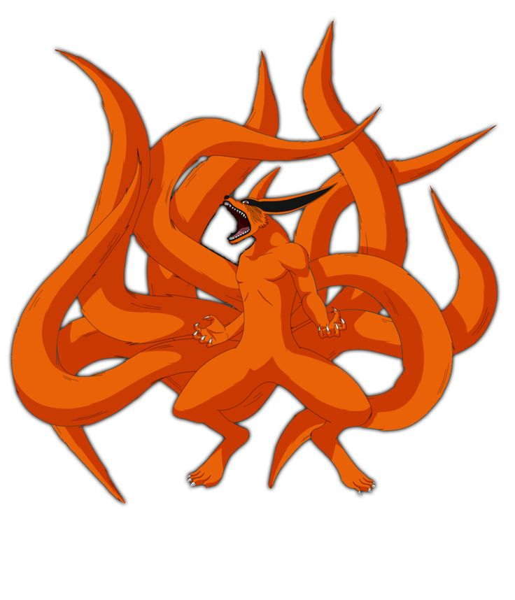
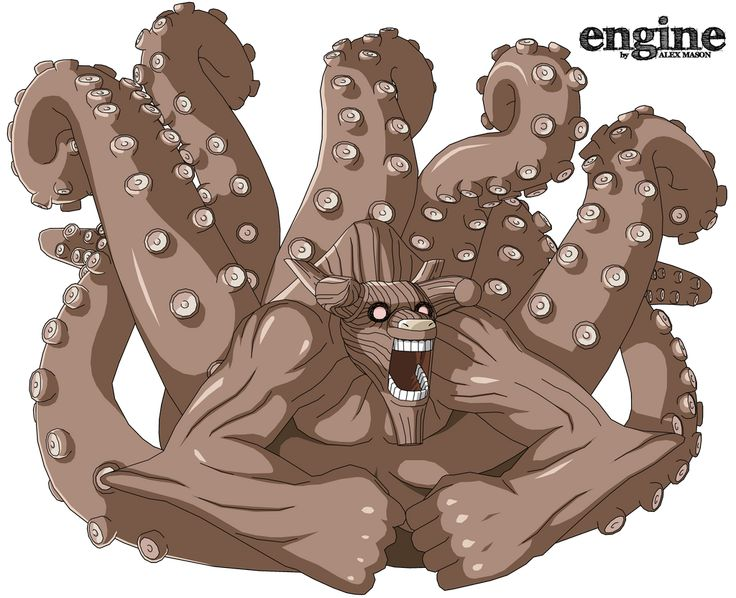

<div class="home-container">
    <div class="home-content">
        <header class="home-header">
            <h1>Welcome to Naruto Wiki!</h1>
            <p>Your ultimate source for all things Naruto.</p>
        </header>

        <div class="naruto-world">
            <div class="description">
                <h2>About the Naruto World</h2>
                <p>Naruto is a Japanese manga series written and illustrated by Masashi Kishimoto. It tells the story of
                    Naruto Uzumaki, a young ninja who seeks recognition from his peers and dreams of becoming the
                    Hokage, the leader of his village. The story is divided into two parts – the first set in Naruto's
                    pre-teen years, and the second in his teens. The series is based on a one-shot manga by Kishimoto
                    that was published in the August 1997 issue of Akamaru Jump.</p>
                <p>Naruto's world is rich and complex, filled with various ninja villages, each with its own unique
                    culture, traditions, and characters. The main village, Konohagakure or the Hidden Leaf Village, is
                    where Naruto's journey begins. As Naruto grows, he forms bonds with his friends and teammates,
                    including Sasuke Uchiha and Sakura Haruno, and learns valuable lessons from his mentor, Kakashi
                    Hatake. Throughout the series, Naruto faces numerous challenges, from dangerous missions to personal
                    trials, all while striving to protect his friends and prove his worth.</p>
                <p>One of the central themes of Naruto is the concept of hard work and perseverance. Naruto himself
                    starts off as an underdog, often ridiculed and underestimated by those around him. However, through
                    sheer determination and the support of his friends, he overcomes many obstacles and grows into a
                    powerful and respected ninja. The series also explores deeper themes such as the cycle of hatred,
                    the importance of understanding and forgiveness, and the impact of war and loss.</p>
                <p>The world of Naruto is also known for its unique and diverse array of jutsu (techniques), which range
                    from elemental attacks to intricate illusions and powerful summoning spells. These jutsu are powered
                    by chakra, a form of life energy that every ninja must learn to control and harness. Throughout the
                    series, characters develop and refine their skills, leading to epic battles and dramatic
                    confrontations that keep readers and viewers on the edge of their seats.</p>
            </div>
            <div class="image">
                
            </div>
        </div>

        <section class="featured-sections">
            <div class="characters-section">
                <div class="first_img">
                    
                </div>
                <div class="first_text">
                    <h2>Characters</h2>
                    <p>Explore the rich world of Naruto's characters.</p>
                    <a routerLinkActive="active" routerLink="/character" class="btn btn-warning">Learn More</a>
                </div>
                <div class="second_img">
                    
                </div>
            </div>

            <div class="beasts-section">
                <div class="first_img">
                    
                </div>
                <div class="first_text">
                    <h2>Tailed Beasts</h2>
                    <p>Discover the powerful Tailed Beasts.</p>
                    <a routerLink="/tailed-beast" class="btn btn-warning">Learn More</a>
                </div>
                <div class="second_img">
                    
                </div>
            </div>

            <div class="kekkei-section">
                <div class="first_img">
                    
                </div>
                <div class="first_text">
                    <h2>Kekkei Genkai</h2>
                    <p>Uncover the secrets of Kekkei Genkai.</p>
                    <a routerLink="/kekkei-genkai" class="btn btn-warning">Learn More</a>
                </div>
                <div class="second_img">
                    
                </div>
            </div>
        </section>
    </div>
</div>